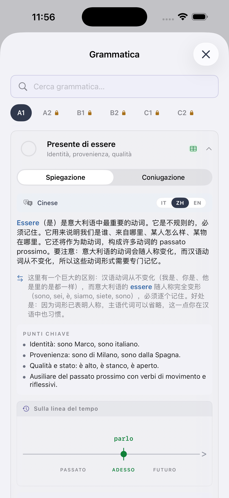
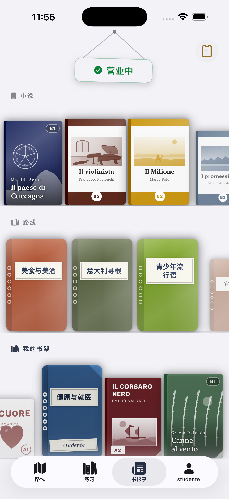
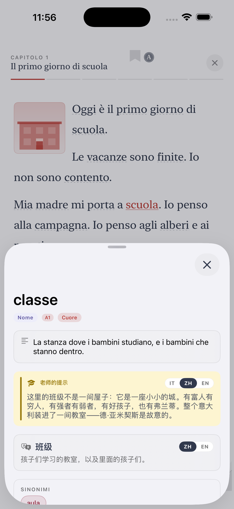
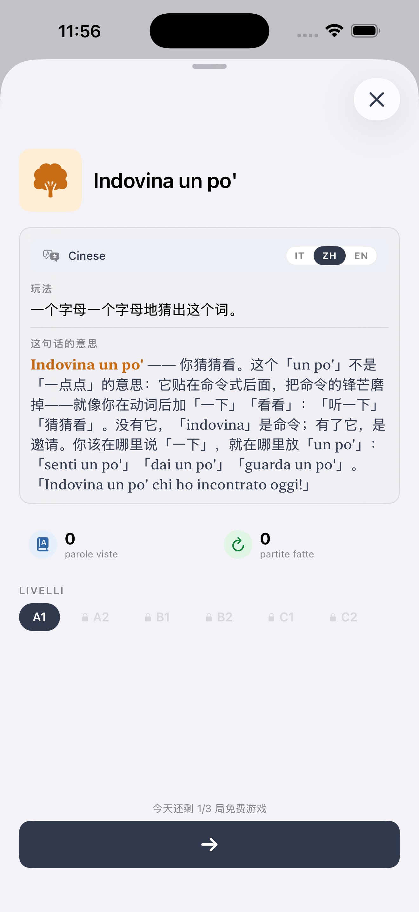

基本颜色
rosso / rossa — 红 · arancione — 橙 · giallo / gialla — 黄 · verde — 绿 · blu — 蓝 · viola — 紫 · rosa — 粉红 · nero / nera — 黑 · bianco / bianca — 白 · grigio / grigia — 灰 · marrone — 棕
性数变化
意大利语颜色是形容词,要与名词性数一致。以 -o 结尾的颜色有 4 种形式:
rosso (阳单) · rossa (阴单) · rossi (阳复) · rosse (阴复)
但一些颜色不变化:blu、rosa、viola、arancione、marrone、beige 只有一种形式。
例句
La casa è rossa. — 房子是红色的。
Ho una macchina blu. — 我有一辆蓝色的车。
I fiori sono gialli. — 花是黄色的。
Le scarpe nere sono belle. — 黑鞋子很漂亮。
Ti · iOS app
See Ti in action
The CEFR path, exercises, edicola and graded Italian classics — from A1 to C2, in 14 languages.





